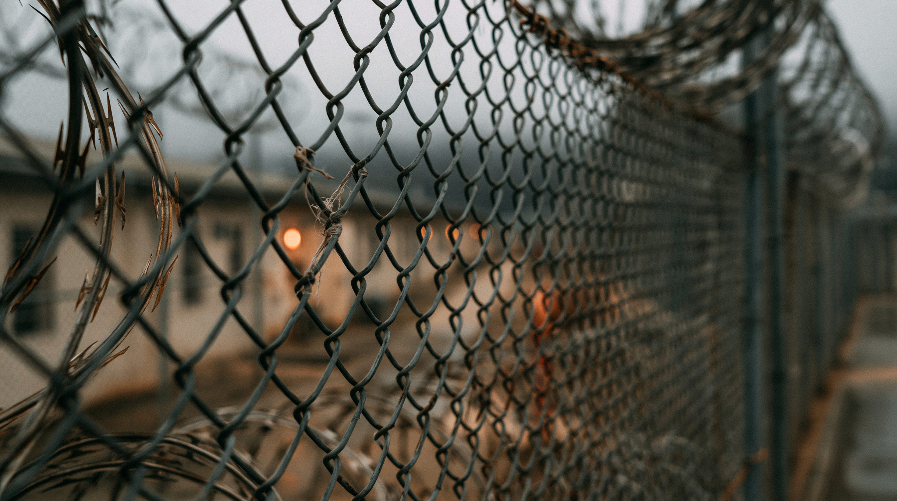

01論点 — なぜ「全員送還」が議論の的になっているのか
アメリカでは、正式な許可を得ずに国内に住んでいる人を「不法滞在者」と呼ぶ。この人たちを見つけ出し、本人の意思に関わらず出身国へ強制的に送り返すことを「強制送還」という。アメリカには以前から不法滞在者を取り締まる仕組みがあったが、2025年1月に発足した第二次トランプ政権のもとで、その規模が大きく変わった。
摘発を担当するのは、アメリカ移民・関税執行局（略称ICE)という政府機関だ。政権発足から9か月間で、職場や自宅など通常の方法による摘発は前の政権のおよそ4.6倍に増えた。街なかでいきなり逮捕する「街頭逮捕」は、11倍以上に増えている。2026年1〜6月だけで、およそ59万人が国外へ送り出されたと報じられている。
政権は2029年までにICEと国境警備の予算を1,700億ドル増やし、一日あたり11万6,000人分の拘束施設を用意する計画を進めている。急激に規模が拡大する中で、アメリカ社会は大きく三つの立場に分かれている。
不法に入国した人は、例外なく国外へ送り返すべきなのか。それとも、犯罪歴や家族の事情に応じて扱いを変えるべきなのか。「法律を守ること」と「一人ひとりの事情への配慮」、この二つはどちらを優先すべきなのだろうか。

02タイムライン — 州兵派遣から世論の変化まで
強制送還の強化は、2025年半ばから段階を踏んで進んできた。都市への軍の派遣、大規模な摘発作戦、そして世論の変化まで、主な出来事を時系列で追う。
政権は、移民摘発に対する抗議活動が起きたロサンゼルスへ、連邦の判断で州兵（各州に置かれ、非常時に知事や大統領の指示で動く予備の軍事組織）を派遣した。都市への軍の展開という強硬な対応が、この後の一連の流れの始まりになった。
首都ワシントンD.C.にも州兵が派遣され、都市部での摘発強化を軍の展開で後押しする方針が続いた。
シカゴを対象にした大規模な摘発作戦が始まった。都市を名指しした集中的な作戦は、この後も各地で繰り返されることになる。
摘発によって働き手がいなくなり、収穫ができなくなるという農業団体の懸念を受け、政権は農場での摘発を一時的に緩める方針を打ち出した。あわせて、H-2Aビザで雇う際に農場側が支払うべき最低賃金の基準を引き下げ、外国人労働者を雇いやすくする策も発表した。これは労働者向けではなく、人手不足に悩む農場側の負担を軽くするための措置だった。取り締まりを強めながら、産業界の実情にも配慮する動きが早くも見られた。
この日、政権発足からちょうど1年となった国土安全保障省は「記録的な年」だったとする声明を発表した。声明は、就任から最初の100日間で6.6万人以上を逮捕し、6.5万人以上を送還したという実績を強調している。
「オペレーション・メトロ・サージ」が開始され、3,789人以上が摘発された。単独の摘発作戦としては、これまでで最大規模とされている。作戦の過程で、銃撃により2人が死亡、拘束中に1人が死亡する事態も起きた。
大学の世論調査機関による調査で、政権の送還対応を「支持しない」と答えた人が54%にのぼった。取り締まりが拡大する一方で、世論には慎重な見方が広がり始めていた。
政府が摘発対象を絞り込むために使うコンピューターの自動判定システムについて、誤って送還対象にしてしまうリスクが連邦最高裁の審理対象にもなっていると報じられた（詳細は05参照）。
フロリダ州知事が、湿地帯に建設された拘束施設「アリゲーター・アルカトラズ」の閉鎖を発表した。施設の劣悪な環境を問題視する訴訟や批判が続く中での決定だった（詳細は03参照）。
2月の時点で59%あった送還政策への支持率が、この時点で49%まで下がった。政策の中身は変わらないまま、世論の評価だけが動いていた。
「全員即時送還」24%、「重罪者のみ送還」41%、「全員に滞在許可」6%という内訳の世論調査結果が発表された。単純な「賛成か反対か」では語れない実態が数字で示された（詳細は04参照）。
Deportation Data Projectの分析によると、2026年6月と7月のICE摘発件数は、政権発足以来の月別最多を記録した。7月には、摘発対象のうち有罪判決歴のある人の割合が27%まで下がっており、無犯罪歴者の割合が調査開始以来もっとも高い水準になっている。
6月に閉鎖されたフロリダ州の拘束施設について、国土安全保障省監察官室（政府機関の運営を内部から監視する組織）の報告書が公表された。収容者が電話ボックスほどの大きさの金属製の檻に「懲罰」として入れられていたなど、稼働当時の劣悪な環境の実態が指摘された（詳細は03参照）。
03各陣営の視点 — 賛成・反対・中間、三つの言い分
強制送還をめぐる対立は、単純な「賛成か反対か」だけでは語れない。全員送還を求める側、行き過ぎだと訴える側、そのどちらでもない立場を取る側。三つの言い分を見る。
| 立場 | 基本スタンス | 主な根拠 | 最大の関心事 |
|---|---|---|---|
| 賛成派 | 不法滞在者は例外なく送還すべき | 法を破った以上、例外を認めれば「抜け道」になる。共和党支持層の圧倒的多数が支持 | 法の秩序を守ること、政権公約の実現 |
| 反対派 | 大量送還の中止、人道的な対応への転換 | 無犯罪歴者が3割超、誤認拘束や施設の劣悪な環境、GDP・税収への打撃 | 人権の保護、経済的損失の回避 |
| 条件付き中間派 | 重罪者は送還、それ以外は合法化の道を | 世論調査で最多の立場。労働力不足が現実の産業被害に直結している | 治安と経済、両方を成立させる制度設計 |
04データ・統計 — 世論の内訳と、経済への影響
不法移民への対応、どうすべきか（世論の内訳）
出典：Economist/YouGov世論調査（2026年8月12日発表）。残りは「わからない・その他」の回答のため、3つの数字を足しても100%にはならない。
全面的な大量送還を実施した場合の産業別労働力損失見込み
出典：American Immigration Council「Mass Deportation」レポート。建設業・農業は労働者の8人に1人（約12.5%）、ホスピタリティ業は14人に1人（約7%）を失うと試算されている。
05深掘り — この先、対立はどこへ向かうのか
※ ここから先は、ここまでの事実にもとづく筆者個人の見解です。
この先の展開を、摘発の規模、手法の変化、そして議会が動くかどうかという3つの視点から予想する。
つまり、この対立が「賛成か反対か」の決着によって解消される見通しは薄い。摘発の規模と手法は現状のまま続き、経済的な痛みが大きい業界から順に、個別の例外が積み重なっていく——それが、ここまでの事実から見えてくる、もっとも起こりやすい展開だ。